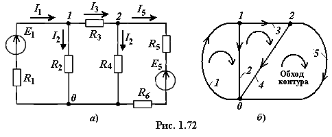

Применение матричной алгебры позволяет упростить запись систем уравнений, необходимых для расчёта сложных электрических цепей, а также использовать матричные формы для формирования уравнений и численных расчётов с помощью ЭВМ. Как отмечалось, методы расчёта электрических цепей базируются на уравнениях Кирхгофа и основных понятиях топологии электрической схемы: узел, ветвь, контур.

Топологическую структуру цепи (рис. 1.72а) (с числом ветвей В = 5 и узлов У = 3) можно описать с помощью узловой и контурной матриц, изобразив направленный топологический граф схемы (рис. 1.72б), в котором ветви представлены в виде линий, проведённых между точками-узлами. Ветвям графа приписывают направления, совпадающие с направлениями токов в ветвях и обозначаемые стрелками.
1.3.2. Узловая и
контурная матрицы
У з л о в а я матрица [A] (рис. 1.73а) представляет собой таблицу, строки которой соответствуют независимым узлам направленного графа цепи, а столбцы − её ветвям. Значения элементов узловой матрицы определяются следующим образом.

Если ветвь j связана
с узлом k и направлена от узла, то ей присваивают значение +1, а если
она направлена к узлу, то ей приписывают значение −1, в случае, если она не связана с
узлом k, то ей присваивают нулевое значение. При этом выбранный
базисный узел (узел 0, см. рис. 1.72б) не входит в матрицу.
К о н т у р н а я матрица< [В] (рис. 1.73б) представляет собой таблицу, строки которой соответствуют независимым контурам цепи, а столбцы − её ветвям (см. рис. 1.72б).
Элементы матрицы имеют следующие
значения: если контур j содержит ветвь k и направление обхода
контура совпадает с направлением ветви, то элемент матрицы имеет значение +1,
а если ветвь направлена против обхода контура, то −1, если ветвь не входит в контур,
то ей присваивают нулевое значение.